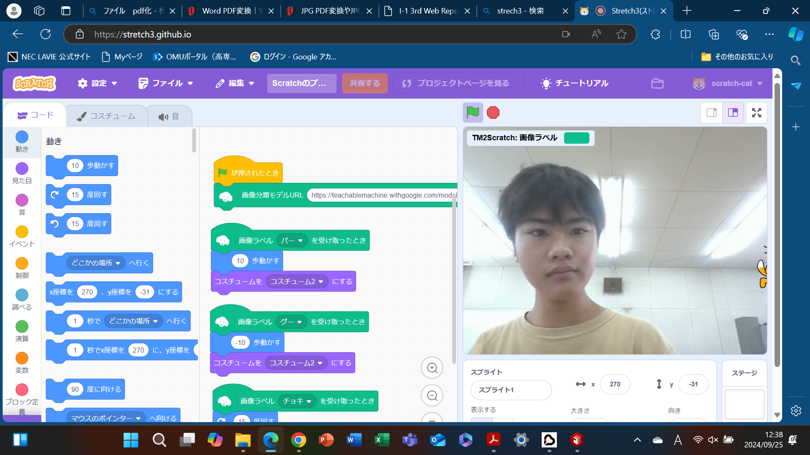
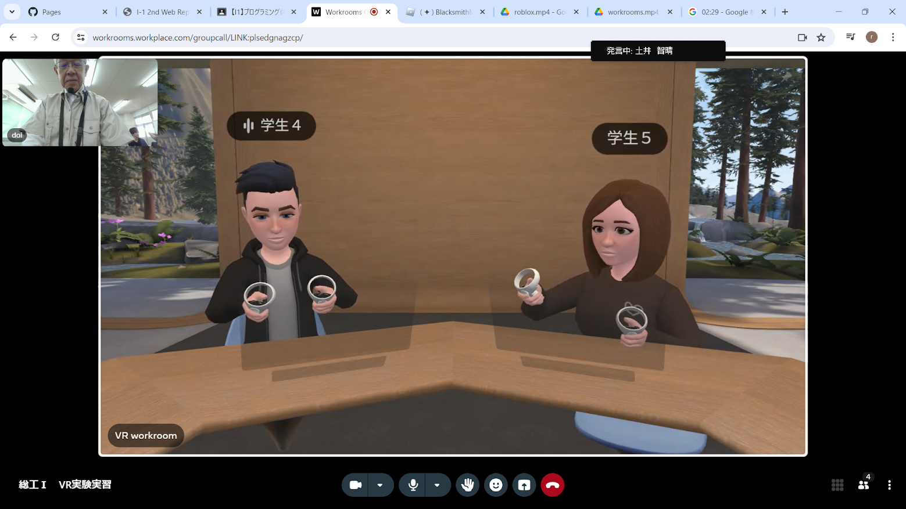
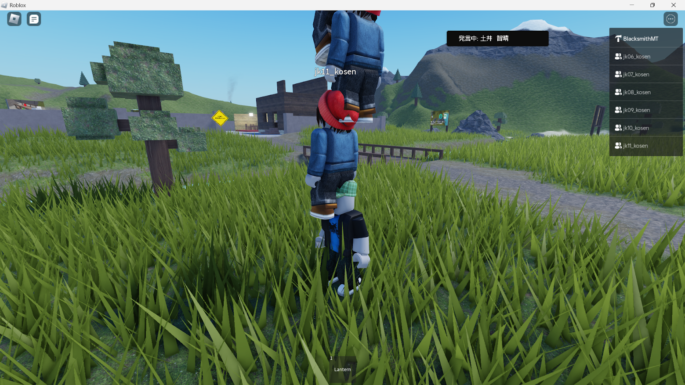

第2週目
2-1 2週目のレポートをHTMLで作る
1.内容
レポートをGithubを使って制作した。
2.感想
グーチョキパーを判別させるためのサンプル集めに苦労した。
3. 2週目が完成した人は1週目のレポートも完成させる
2-2 機械学習体験

1.内容
松尾先生の講演を聞いた。また、Teachable Machineを使って、グーチョキパーを判別させ、そのシステムを利用して、猫を動かすプログラムを作った。
2.感想
AIが自分で学ぶことに改めて技術の進歩のようなものを感じた。グーチョキパーを判別させるためのサンプル集めに苦労した。
松尾先生の講義を聞いて、今まであまりよくわかっていなかったディープラーニングの仕組みを理解することができた。
2-3 VR（バーチャルリアリティー：Virtual Reality）会議室の体験


1.内容
VR空間で、Warkroomsと、Robloxを体験した。
2.感想
自分のしたいように動いたり、交流することが楽しかった。しかし、長くしていると、少し気分が悪くなったので、
世界に没入できて、もっと使いやすいVRゴーグルなどの機会ができればいいなと感じた。